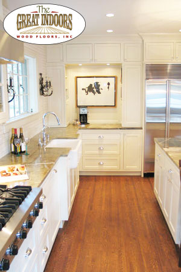
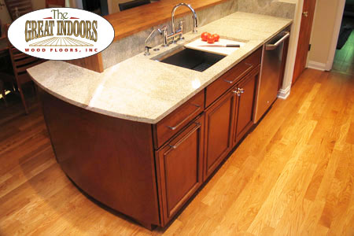
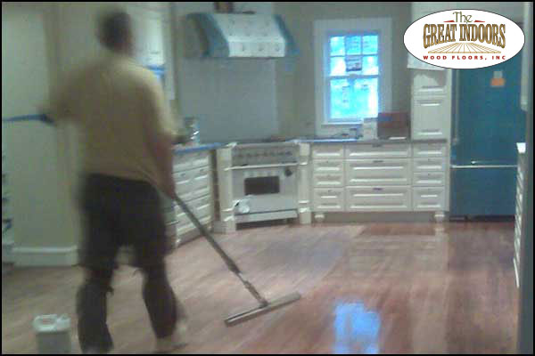
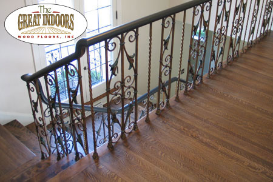
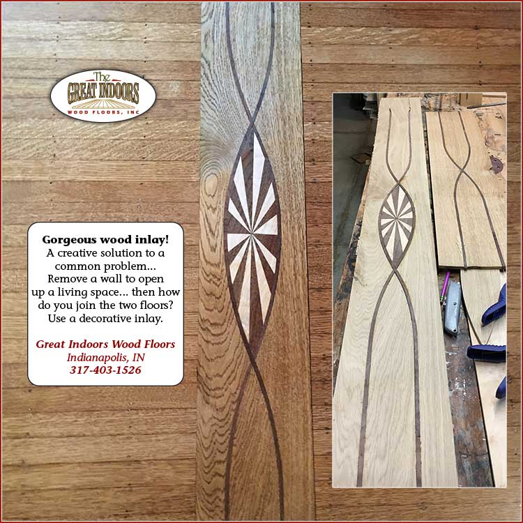

Indianapolis, Indiana • Since 1994
Hardwood floors, restored and crafted by hand
Installation, refinishing, and repair for greater Indianapolis homes. Bona Certified craftsmanship, 99% dust-free sanding, trusted since 1994.

Hardwood Floor Services
Everything a wood floor needs, under one roof
From new installation to bringing a century-old floor back to life, every job is done by hand and finished to match your home.

Installation
New hardwood in remodels and new construction. Twenty-plus species, matched perfectly to existing floors.
Explore installation →
Refinishing
Sand, stain, and seal in about two days. 99% dust-free, back on your floors within 24 hours.
Explore refinishing →
Repair
Gouges, pet stains, water damage, fire damage. Repaired so well you'll have trouble finding the spot.
Explore repair →- Maintenance Coating Skip the full refinish
- Deep Cleaning Grime out of the grain
- Engineered Flooring Stable over concrete
- Wire-Brushed Floors Texture & traction
- Hand-Scraped Floors Rustic by design
- Whitewashed Floors Soft, muted color
- Oil-Finished Floors Natural matte look
- Inlays & Mosaics Floor artistry
- Custom Wood Art Beyond floors

From fine floors to works of art
Owner Brian Depp cuts and sets custom borders, mosaics, and inlays from exotic woods, every piece made by hand, no lasers. Braided borders around fireplaces, compass medallions in foyers, even a family monogram in the front hall.
Inlays can be added to existing floors before refinishing, which is also a clever way to save money on an otherwise costly repair.
Thousands of Indianapolis floors, refinished by hand
Bona Certified craftsmanship, 99% dust-free sanding, and an eye for matching wood you cannot buy off a shelf. Since 1994.
Watch a floor come back to life
A short film of a recent wood floor restoration project in an Indianapolis home.
Refinishing, start to finish in about two days
Most homes are back on their floors within 24 hours of the final coat. Many clients schedule the work while they're away on vacation.
Day One Repair, sand, stain
- Repair any damaged boards or problem areas
- Sand the floor with our 99% dust-free system
- Sample stain colors right on your raw wood
- Apply the chosen stain and let it dry overnight
Day Two Inspect and finish
- Final inspection of the dried stain
- Apply a durable water-based polyurethane finish
- Walk on it lightly in 1–2 hours, furniture back in 12–24
“The repairs are perfect, and the color and luster are so warm. I'm thrilled.”
“They turned out absolutely beautiful. We can't wait to show them off.”
“The floor looks splendid! Very nice work, and I love the inlay.”
“I love my new floors! I would highly recommend ya to anyone!”
These are real notes from real clients. Read the original handwritten letters.
Serving greater Indianapolis
We install, refinish, and repair hardwood floors throughout the metro area, including historic neighborhoods where floor restoration takes an experienced hand.
- Indianapolis
- Carmel
- Zionsville
- Westfield
- Fishers
- Brownsburg
- Greenwood
- Avon
- Meridian-Kessler
- Broad Ripple
- Geist
- Butler-Tarkington
Let's talk about your floors
Free consultations. Showroom visits by appointment. Honest advice on whether your floors need a full refinish or just a fresh coat.